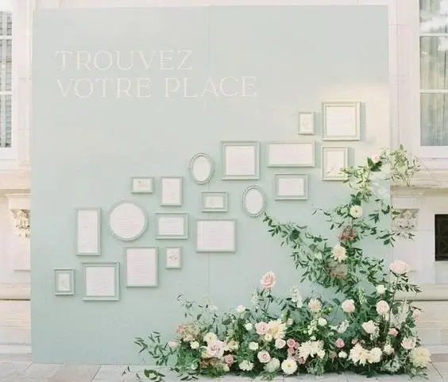
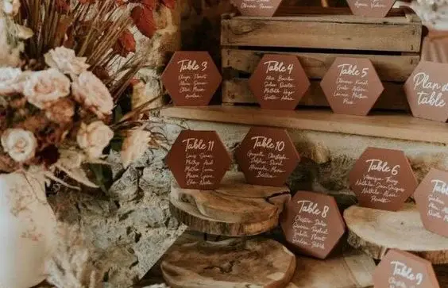
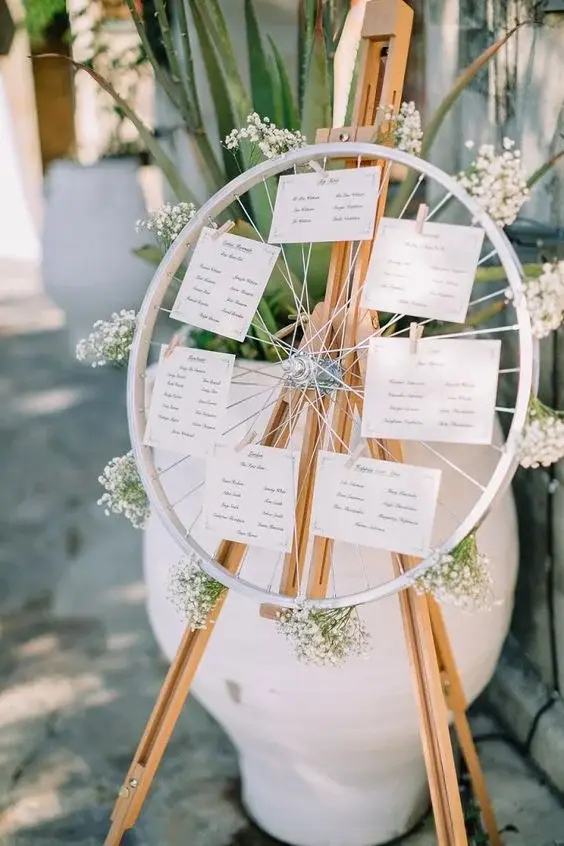
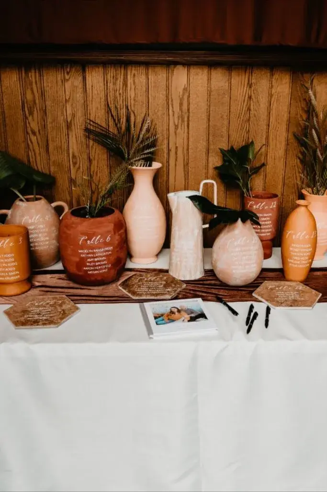
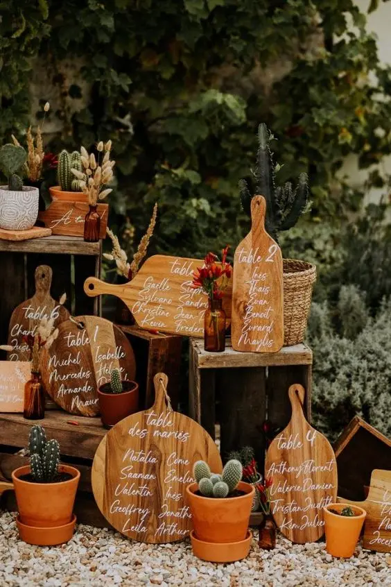
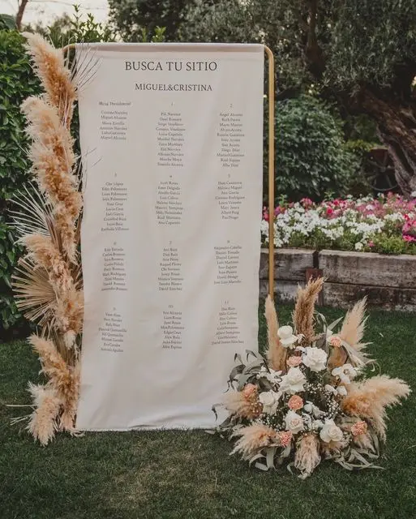
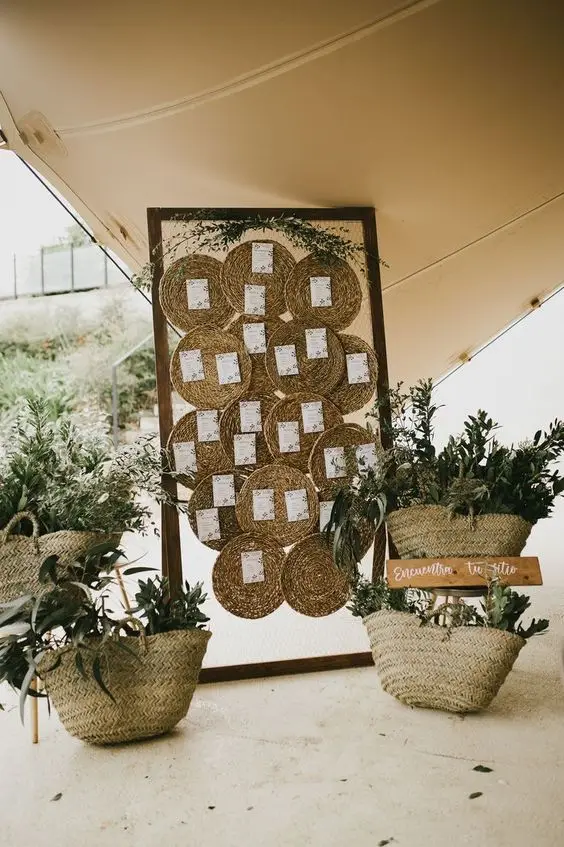
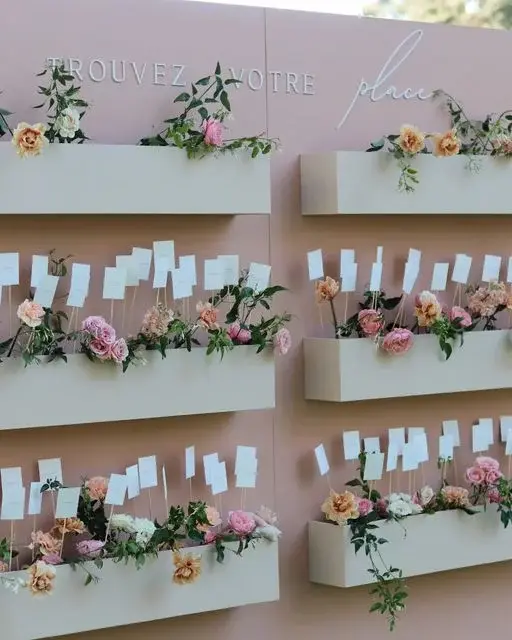
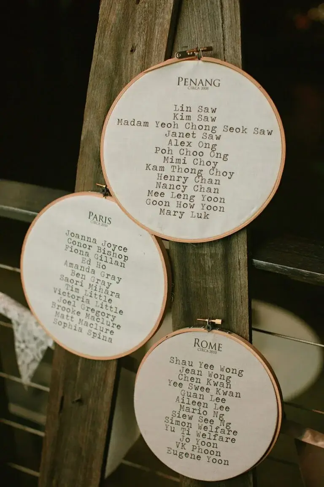
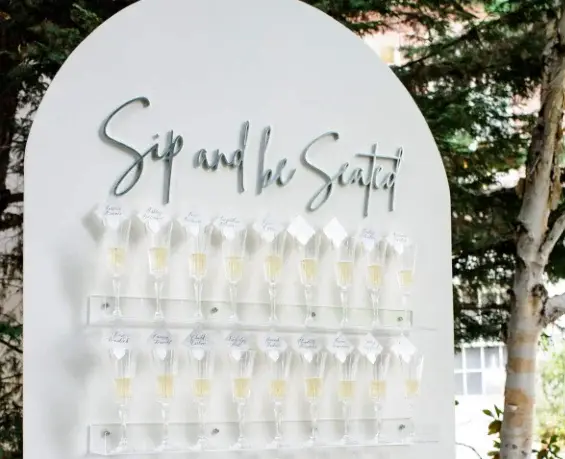

What makes a successful wedding? A happy couple, a festive atmosphere, more-than-delicious catering, lively guests and above all breathtaking decor.
Wedding decor means lots of flowers, a top table and tableware, but above all a seating plan. From choosing the reception venue to last-minute adjustments to the tables, challenges and surprises can be commonplace on the big day, especially where your guests are concerned. Because let's be honest, the seating plan can be a real headache. Between your favourite cousin who can't stand her aunt and the uncle you can't seat just anywhere if you don't want the evening to go up in smoke, the seating plan needs careful thought well in advance. And every last-minute change can be a source of frustration. Yet the seating plan has the advantage of being something every guest looks at, making it an ESSENTIAL decorative element.
If you're short of inspiration for your seating plan or looking for ideas to wake up your creative spirit, discover 23 original seating plan ideas in this article to help your guests find their seat.

Why have a seating plan at your wedding?
The seating plan lets you arrange your guests across the different tables at your wedding. Unless you opt for free seating, a seating plan remains essential, as it guarantees perfect organisation and spares you countless questions from guests such as: "Where am I sitting?" The seating plan is therefore useful and indispensable: as you will notice, guests generally check it as soon as they arrive to find out where they are seated.
Where should you place the seating plan?
The seating plan is usually set up at the entrance to the reception room, so guests can check it before going in, find their seat more easily and avoid crowding around the tables.

23 seating plan ideas:

1. Windows
Old windows repurposed as a seating plan bring a vintage, elegant touch to the decor. You can either write directly on the glass or apply stickers with elegant calligraphy.

2. Chalkboard
A chalkboard seating plan is ideal for a vintage-themed wedding. With some chalk and careful calligraphy, you have the perfect seating plan. For extra originality, you can dress it up with flowers or a frame.

3. Jars
Glass jars filled with sand or water, or left empty, make creative supports for displaying tables and guests' names, adding a refined touch to the decor. Fresh or dried flowers can be a bonus for a floral touch.

4. Mirror
A large framed mirror used as a seating plan board brings a touch of glamour and sophistication to the wedding. Adding table and guest names with beautifully lettered stickers makes a striking effect.

5. Plexiglass panel
Very on trend, a clear or painted plexiglass panel gives the seating plan a modern, pared-back look, creating an effect of transparency and lightness. You can either engrave the names or apply labels with pretty calligraphy, and display your seating plan on an easel or straight on the floor.

6. Bicycle wheel
Why not go for originality with a bicycle wheel as a support for your signs? The cards listing each table are simply clipped to the spokes with little clothes pegs. It is a great way to add a vintage touch to your wedding.

7. Wooden panel
A natural wooden panel adds a rustic note to the seating plan, perfect for a country-themed wedding. As with a plexiglass panel, the names can be engraved to keep the wood's authentic look, or painted or written in elegant lettering for a more refined effect.

8. Wooden ladder
A wooden ladder used to display guests' names brings a rustic touch to the decor. The tables and who sits at them can be written on pretty signs hung from the ladder. To complete a countryside theme, a touch of greenery such as ivy can be ideal.

9. Terracotta pots
Terracotta pots filled with plants or flowers make a rustic, authentic support for displaying guests' names, adding a natural touch that is ideal for a country theme.

10. Wine bottles
Empty wine bottles, carefully arranged on a stand, are an original seating plan idea for displaying guests' names, all the more so as the Bordeaux region is famous for its fine wines!

11. Chopping boards
Natural wooden chopping boards used to display guests' names bring an unexpected touch to the decor. For extra originality, mix sizes, shapes and colours.

12. Surfboard
A decorative surfboard used as a seating plan board brings a relaxed, summery feel, perfect for a seaside or beach-themed wedding.

13. Fabric
Fabric draped over a metal arch is an original idea for a seating plan. For more creativity, use several fabrics in different colours to create an asymmetric, modern effect.

14. Shutters
Old shutters repurposed to display guests' names bring a vintage, authentic touch to the decor. Names written on pretty stationery can be hung on a string or slotted into the louvres.

15. Rattan
Rattan pieces, such as decorative hoops or placemats, can serve as supports for guests' names. This kind of seating plan is ideal for adding a country or boho touch to your wedding.

16. Photos
Framed childhood photos of the guests, arranged on a board, can make a fun, nostalgic seating plan. Guests will enjoy guessing who is in each photo while finding their table.

17. Flowers
Flowers always guarantee a pretty seating plan. You have several options: arrange them in pots with the guests' names on them, or plant them in window boxes hung on a stand, with your guests' names on labels tucked in among them.

18. String
For a less traditional seating plan, string can be an excellent idea. A wooden board, nails, stickers with your guests' names and table numbers, and some string will make your seating plan original and out of the ordinary.

19. Glass domes
Glass domes holding decorations such as flowers make an elegant support for displaying your wedding tables, adding a touch of sophistication.

20. A cluster of mirrors
A cluster of mirrors can be an interesting support for a seating plan. Rattan, straw or vintage-style mirrors: it's up to you to choose the ones that best suit your wedding theme.

21. Embroidery hoops
To add a vintage note to your wedding, consider using embroidery hoops to present your guest lists.

22. Macramé
An artfully woven macramé backdrop makes an original support for displaying guests' names, adding a boho-chic touch to your wedding.

23. Exotic foliage
For an exotic-themed wedding, banana leaves can be an excellent idea for writing guests' names and displaying the table arrangements.


Escort cards: an alternative to seating plans
Straight from the United States, an "escort card" is a small card that tells your guests which table is theirs, offering an alternative to a fixed seating plan. Rather than looking for a place card, guests simply pick up their card and head to their assigned table. Traditionally, escort cards are small folded cards showing the guest's name and table number. But new ideas are emerging that turn these cards into real wedding keepsakes.
Old keys, for example, hung on a board can bring a vintage touch to your decor while inviting guests to discover their seat with curiosity. Guests can then leave with this small keepsake, a lasting reminder of the day. Escort cards placed on a glass of champagne or another drink can be an original way to present your reception's table arrangements. Of course, there are many other ideas for creating an unusual, personalised seating plan.
My role?
As a wedding planner and designer based in the Bordeaux region, my aim is to accompany you through the preparations for your big day. I am committed to fully meeting your needs and wishes while giving you sound advice. My goal is to put my tailor-made services to work to create a fully personalised wedding that reflects you. Decor is one of the essential parts of a wedding: I take the time to understand your theme, colours and desired atmosphere, and I make sure every detail is considered, including the seating plan. I am here to assist you at every stage of the process so your wedding lives up to your expectations and perfectly reflects your style and vision.